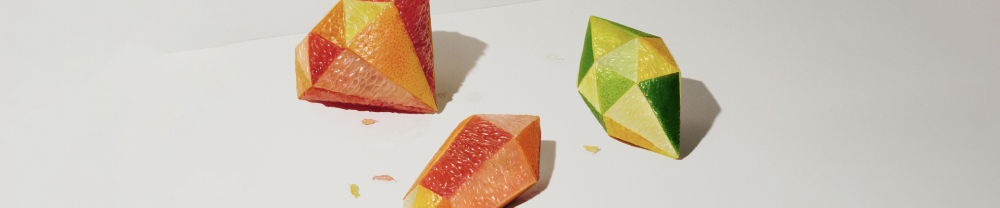
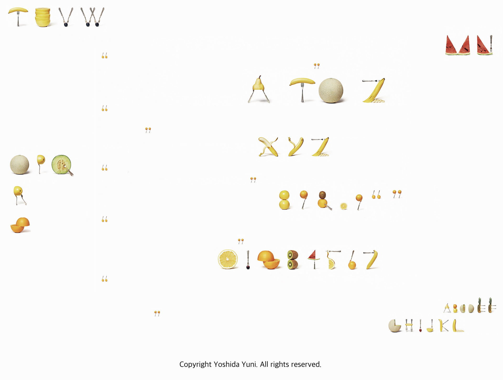

젊은 디자이너들에게 한 말씀 부탁드려도 될까요?
원래 식물이나 식재료와 같은 자연의 것을 좋아합니다. 색깔이나 모양이 하나같이 똑같은 것은 없잖아요. 유일무이한 것을 사용하는 게 좋아요. 그리고 사진을 찍었을 때 정적인 것이 동적으로 보이고요. 생명을 가진 것은 역시 존재감이 있다고 생각합니다.
CG가 아닌 수작업으로 작품 활동을 이어가는 이유
CG가 아닌 게 대단하지?라는 말을 하고 싶어서는 절대 아니에요. 그냥 제가 수작업을 좋아하는 것도 있고, 만들면서 생각하는 과정도 좋아하기 때문이에요. CG 작업은 목적지까지의 길이 없어진달까요, ‘과정’이 없어져요. 그렇지만 수작업을 통해 만들면 이게 좋을까 저게 좋을까 고심하며 할 수 있는 일이 많다고 생각하거든요.
가장 애착이 가는 작품이나 기억에 남는 작품이 있다면
이 모자이크 작품은 새로운 발상으로 제작한 것이에요. 이 모자이크의 일부는 사실 재료가 변색하는 점을 역이용했어요. 변색되지 않게 항상 노력했지만 변색을 시키면 사용할 수 있는 색깔의 폭이 넓어진다는 걸 알았어요.
식재료를 사용한 작품에 많은 관심을 보이는 이유가 무엇인지
어려운 질문을 하시네요…(웃음) 제가 개인전을 열었을 때 놀란 점이 하나 있는데, 그게 바로 아이들의 반응이 컸다는 거예요. 가족끼리 온 분들도 꽤 있었는데 그때 아이들이 이건 어떻게 만들었을까? 하며 엄마 아빠와 대화하는 장면을 많이 봤어요. 아마 일상에서 자주 보는 재료를 새로운 관점으로 풀어놓은 작품들이기에 시선이 가서 관심을 주시는 게 아닐까 싶습니다.
앞으로 어떤 아트 디렉터로 남고 싶은지
비주얼로 전달하는 작품이라 언어 장벽이 있는 해외에 계신 분들도 이해해주시는 것 같아 기쁘다는 생각을 종종 해요. 제가 좋아하는 에피소드 중 하나가, 제 작품이 그려진 티셔츠를 입고 계신 환자분을 보고 저를 알게 되어 개인전에 오셨다는 간호사분 얘기예요. 그 환자분의 티셔츠를 같은 병실에 있던 환자분들이 보며 어떻게 만든 걸까? 신기해하며 대화하는 좋은 시간을 보냈다는 거예요. 그렇게 일상 속에서 소소한 행복을 찾을 수 있는 계기가 되는 작품을 계속 만들고 싶습니다.
[출처] 미식생활자 | 기자/에디터 : 이윤재
Yoshida's
Interview